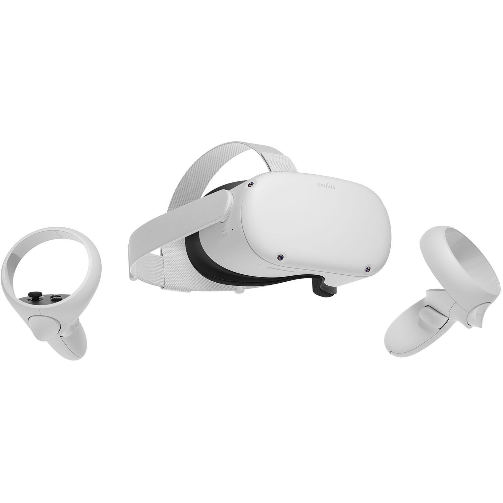

The Effect of Immersion on Analyzing Node-Link Diagrams
Key Information
The following is a short summary of this study to help you decide whether or not to be a part of this study. More detailed information is listed later on in this form.
Why am I being invited to take part in a research study?
We have invited you to take part in a research study because you have responded to our emails, posters, or social media posts used to advertise this research study.
Why am I being invited to take part in a research study?
Someone will explain this research study to you.
Whether or not you take part is up to you.
You can choose not to take part.
You can agree to take part and later change your mind.
Your decision will not be held against you.
You may discuss your decision with your family, your friends and/or your doctor.
You can ask all the questions you want before you decide.
Why is this research being done?
We are interested in analyzing the effects of immersion and pan and zoom interaction on a user’s ability to analyze a node-link diagram. This study compares different technologies used for analyzing these diagrams.
What is the purpose of this research?
The purpose of this study is to assess whether immersive and multidimensional technology can increase the understanding and readability of node-link diagrams. We're also interested in analyzing the effects of immersion and pan and zoom interaction on a user’s ability to analyze these diagrams.
With the rise of big data and improved data collection capacities, informative network diagrams have become larger and denser. Network diagrams -- also known as node link diagrams -- are represented by individual nodes connected by links that show a relationship between two nodes. As graph complexity increases and more of these nodes and links are needed, traditional data analysis tools on 2D computer screens become more cluttered and difficult to use. We want to know: Can more immersive and multidimensional technologies (like trackball mice or virtual reality head-mounted displays) increase the readability and comprehensibility of node-link diagrams?
Trackball mice are mouse-like devices with a spherical ball that a user can roll in place. The sphere directly maps to a 3D object on a screen such that rolling the ball will cause the 3D object to move accordingly. We are interesting to see if manipulating a tangible 3D object has benefits for understanding a 3D graph. However, trackballs still operate with a 2D screen. Visualization techniques on these screens has two main problems. 1) It can be unintuitive and difficult to visualize 3 dimensional graphs on 2 dimensional screens, and 2) Displays with limited screen sizes are difficult to scale in order to keep up with the growing complexity of data. These issues signal the need for new approaches.
Virtual Reality head-mounted displays (VR HMDs) can use the space around the user as a display space. They can allow users to track hand movements and interactions with 2D and 3D graphics within the space, enabling new applications in so-called immersive analytics. Immersive analytics is an emerging research field that focuses on applying engaging, embodied display and interaction techniques for data visualization and analytics.
How long will the research last and what will I need to do?
We expect that you will be in this research study for one to one and a half hours.
You will be asked to complete three tasks in four different data analysis environments. For example, you will be asked to find the common node between two highlighted nodes in the diagrams we will show you.
More detailed information about the study procedures can be found under the "Detailed Study Outline" section.
Is there any way being in this study could be bad for me?
Because you will be fully immersed in a virtual environment at some point during the study, there is a small chance that you may experience some discomfort, nausea, motion sickness, disorientation, headache, fatigue eye strain, or dry eyes. The headset will be next to your skin, so there is a possibility of skin irritation.
We take steps to minimize the mentioned risks. If you feel any of these symptoms in the study, feel free to take a break for as long as you need. You may also end participation at any time.
More detailed information about the risks of this study can be found under the “Detailed Risks” section.
Detailed Risks
Because you will be fully immersed in a virtual environment at some point during the study, there is a small chance that you may experience some discomfort, nausea, motion sickness, disorientation, headache, fatigue eye strain, or dry eyes. The headset will be next to your skin, so there is a possibility of skin irritation. We take steps to minimize the mentioned risks. The following are some of these steps:
The instruction room will be quiet, entirely illuminated, and provided with fresh air circulation
The instructor will always stay with the participant if the participant needs anything
The instructor will help with setting up the HMD and make sure that the display is working properly and the device is calibrated correctly. This can be done without interacting directly with the participant
Participants will not experience any flashing or visual distracting and discomforting scenes in any condition. No sound is involved in the study
You may also end participation at any time.
Will being in this study help me in any way?
We cannot promise any benefits to you or others from your taking part in this research. However, possible benefits may include getting to experience and use virtual reality.
What can I expect if I take part in this research?
We expect that this study will take 1 hour to 1.5 hours. You will complete 3 task, and you will complete each task in 4 different conditions. In each condition, you will complete two practice trials and then two official trials. The structure of the study is listed below (with the first task expanded), as are the devices used in this study.
Task 1
Condition 1
Practice Trial 1
Practice Trial 2
Official Trial 1
Official Trial 2
Condition 2
Practice Trial 1
Practice Trial 2
Official Trial 1
Official Trial 2
Condition 3
Practice Trial 1
Practice Trial 2
Official Trial 1
Official Trial 2
Condition 4
Practice Trial 1
Practice Trial 2
Official Trial 1
Official Trial 2
Task 2
Task 3
Post-study Survey
Detailed Study Outline
The PI (Helen Huang) will conduct the study with you. The study compares four different conditions:
2D graphs on a 2D screen with a computer mouse
3D graphs on a 2D screen with a computer mouse
3D graphs on a 2D screen with a trackball mouse
3D graphs in a 3D virtual reality environment with hand-tracking.
One participant will take part in the study at a time in the following steps:
WELCOME (2 minutes): the participant will be welcomed and instructed about the purpose of the study (see above), the duration of the study (around 1.5 hours), as well as the setup.
CONSENT (3 minutes): The participant will then read the consent form and sign it if he/she agrees and wants to proceed with the study. The instructor will inform the participant that they can take breaks at anytime they want. They can also withdraw at any stage.
INTRODUCTION (5 minutes): The instructor will introduce and explain each of the tasks the user will be asked to complete. The participant will be encouraged to ask questions.
STUDY (70 minutes): The participant will go through four rounds, one for each condition (see above). We plan to allocate 10 minutes for condition 1, 15 minutes for condition 2, 20 minutes for condition 3, and 25 minutes for condition 4. At the beginning of each round, the instructor will first introduce and explain the graph as well as what interactions the user can perform. Then the user will be lead through 5-15 minutes of training performing 3 tasks on the training graph. Finally, the remaining time per round will be used for completing the same tasks on new graphs where the response time and the user’s answers will be recorded by the program.
END (10 minutes): The participant will be presented with a quick survey, asking him/her to rate their experience and demographics. The post-study survey is in the attached materials. He/she will get the study compensation paid in cash ($20).
The tasks will be:
Select common nodes between two highlighted nodes
Count the number of triangles formed by the graph
Find the missing link between two node-link diagrams
What technology will I be using in this study?
Mouse
Trackball Mouse
VR Headset

What happens if I say yes, but I change my mind later?
You can leave the research at any time; it will not be held against you.
If I take part in this research, how will my privacy be protected? What happens to the information you collect?
Efforts will be made to limit the use and disclosure of your personal information, including research study records, to people who have a need to review this information. We cannot promise complete secrecy. Organizations that may inspect and copy your information include the IRB and other representatives of this organizations involved in this research.
We de-identify the data we collect in the study. Findings from the study will only be released in an aggregated or summarized manner. The information collected as part of this research will not be used or distributed for future research studies.
What else do I need to know?
If you agree to take part in this research study, we will pay you $20 for your time and effort. There will be no cost to you for participating in this study.
Who can I talk to?
If you have questions, concerns, or complaints, or think the research has hurt you, talk to the research team at huangh@college.harvard.edu.
This research has been reviewed and approved by the Harvard University Area Institutional Review Board (“IRB”). You may talk to them at (617) 496-2847 or cuhs@harvard.edu if:
Your questions, concerns, or complaints are not being answered by the research team.
You cannot reach the research team.
You want to talk to someone besides the research team.
You have questions about your rights as a research subject.
You want to get information or provide input about this research.
Statement of Consent
I have read the information in this consent form including risks and possible benefits. All my questions about the research have been answered to my satisfaction. I understand that I am free to withdraw at any time without penalty or loss of benefits to which I am otherwise entitled. Please click I AGREE to continue with the study.